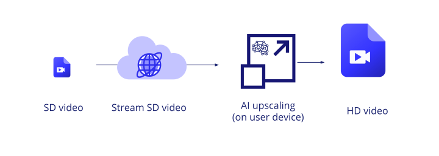
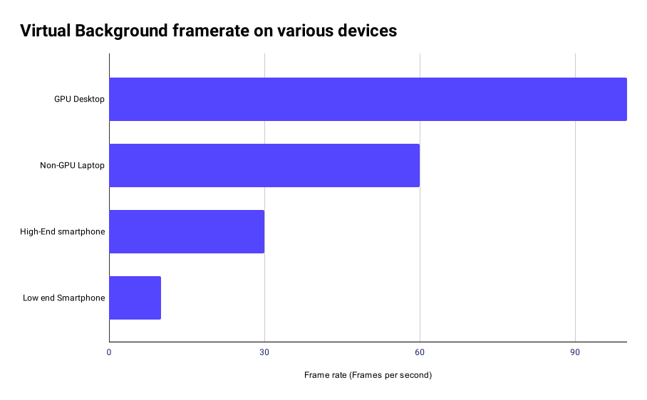
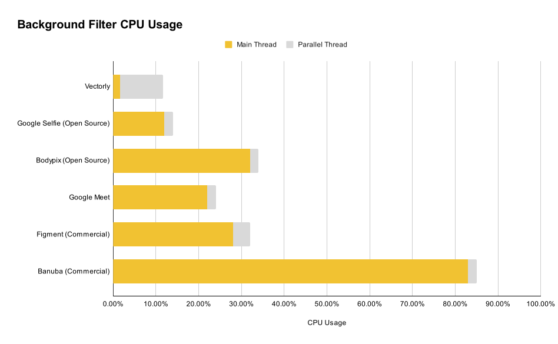
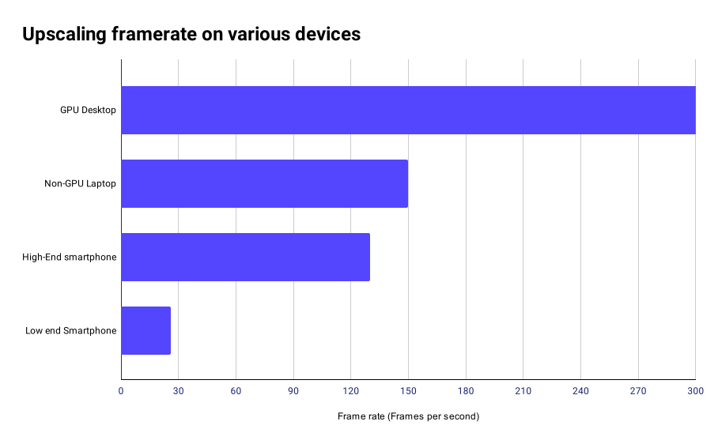
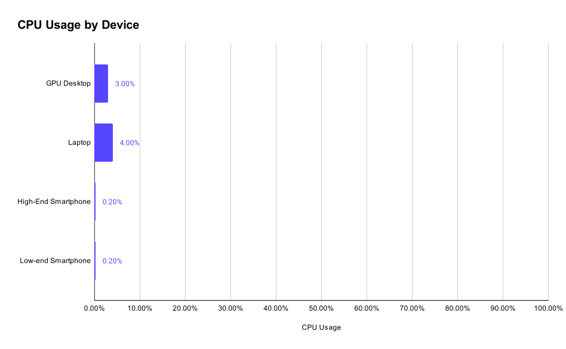
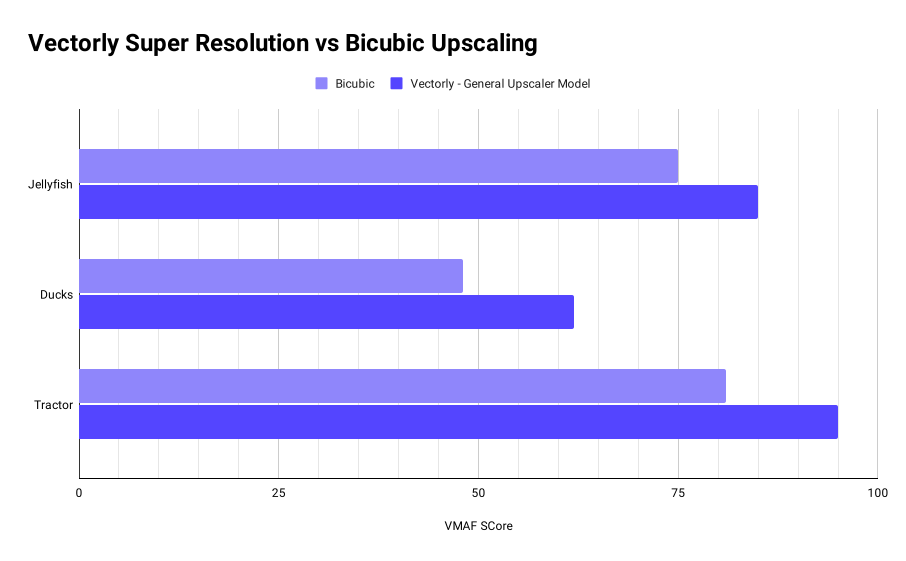

Vectorly's client-side SDK makes it easy to integrate AI filters, such as Background Filters (virtual backgrounds, background blur) as well as AI Upscaling, into WebRTC streaming applications
Installation
When you sign up, you'll get a token which, you will need to use the library. Next, you can install the ai-filters library via NPM or via CDN
NPM
npm -i @vectorly/ai-filters
CDN
https://cdn.vectorly.io/v2/latest/ai-filters.js
Available Filters
We've compiled a set of AI filters from research & Academia, open source projects as well as our own custom AI filters, all of which are able to be accessed through the same Vectorly interface.
Background Filter
By using the Background Filter, you can implement features like Virtual Backgrounds or Background Blur, to give users additional privacy when calling from home. The AI model used for running background segmentation is the meet model, used by Google Meet.
Vectorly has built it's own AI Upscaling filter based on a technique called Super Resolution, which uses AI to upscale and enhance images. Through Super Resolution, we can upscale and clean-up low-resolution video, making it look close to HD quality.
Super Resolution Example:
240p
240p upscaled to 720p
Original 720p
With AI Upscaling, you can improve the clarity & quality of video streams when the source resolution is of low quality.

You can also stream SD content to users and upscale it to HD in real time as they're watching it, providing an HD viewing experience while only consuming the bandwidth for the low-resolution video (50 to 90% less data than for the HD video).
Vectorly's Background Filter takes as an input any MediaStream or MediaStreamTrack element, so for a WebRTC application, all you need to do is to instantiate the filter object with the MediaStream or MediaStreamTrack element you want to filter. The output is a MediaStreamTrack, which can be sent via WebRTC or loaded locally into a video element
The basic API for loading the background filter is:
Integrating the filter with any specific Video Conferencing API or service just requires finding the MediaStream element associated with video stream you want to filter. The following sub-sections discuss how to integrate the filter with various conferencing services.
Vanilla WebRTC
As shown above, the API for basic/general WebRTC is:
For Web deployments using Agora (specifically the 4.x API), you can just feed the video track to the Background filter, which will return a filtered video track which you can publish.
let videoTrack = AgoraRTC.createCameraVideoTrack();
let audioTrack = AgoraRTC.createMicrophoneAudioTrack();
const filter = new BackgroundFilter(videoTrack, {token: 'insert-vectorly-token-here', type: 'blur'});
const filteredTrack = filter.getOutput();
client.publish([filtedredTrack, audioTrack], handleFail);
Twilio
You can enable filters on any VideoTrack object by feeding it to the Twilio plugin (see reference).
Once you have instantiated the filter object, you can access basic filter events, like onload and error handling.
const filter = new BackgroundFilter(stream, config);
filter.on('load', function () {
console.log("filter initialized");
});
filter.on('start', function () {
console.log("Starting filter");
});
filter.on('stop', function () {
console.log("Stopping filter");
});
filter.on('error', function () {
console.log("Filter failed to initialize");
});
If the filter fails to load, then it will pass through the original video stream
Controls
You can also enable and disable the filter programatically.
const filter = new BackgroundFilter(video, config);
filter.disable();
filter.enable();
AI Upscaling
Loading
The basic API for loading the background filter via NPM is:
import vectorlyUpscaler from @vectorly-io/ai-upscaler;
For loading via CDN, you can access the upscaling filter as the vectorlyUpscaler object, which will be available in the global scope
For web environments, we've packaged our upscaler as a standalone Javascript library, as well as as plugins to several popular HTML5 video players (see the full API for more detail).
Basic usage
For the vectorlyUpscaler, the basic API involves instantiating an vectorlyUpscaler object, and specifying a video element.
const video = document.getElementById("video");
const config = {
token: '...'
};
const upscaler = new vectorlyUpscaler(video, config);
This automatically upscales the video, by overlaying a canvas element with the upscaled video frames on top of the video element. When the video plays, the upscaler will automatically upscale each frame and update the canvas element. See the styling section for more detail.
Integration
General WebRTC
The vectorlyUpscaler works with any video tag, so for a WebRTC application, all you need to do is to instantiate the upscaler object with the video element you want to upscale.
const upscaler = new vectorlyUpscaler(document.getElementById("remoteVideo"), {token: 'insert-vectorly-token-here'});
We have an example repository, showing how Vectorly can be integrated with WebRTC, as well as a full working general WebRTC demo here.
Integrating the upscaler with any specific Video Conferencing API or service just requires finding the video element associated with video stream you want to upscale.
Jitsi
You can enable upscaling on any VideoTrack object by intercepting the corresponding video element you attach it to (see reference).
This also works with a publisher object. Refer to the Vonage documentation for styling - Vectorly's upscaler will fit within the styling defined by OpenTok.
You can integrate Vectorly's AI upscaler with Daily.co if you're building a custom custom video chat interface . Using the default React code sample from Daily, we've built a full working demo reference
useEffect(() => {
videoEl.current &&
(videoEl.current.srcObject = new MediaStream([videoTrack]));
if (videoEl.current && props.isLarge) {
window.upscalers = window.upscalers || {}
window.upscalers[videoTrack.id] = new vectorlyUpscaler(videoEl.current, {token: 'insert-vectorly-token'});
}
}, [videoTrack]);
You just need to make sure you intercept the video element associated with the video track you want to upscale.
Vectorly's AI upscaler is not compatible with the pre-built UI from Daily.co, as the pre-built UI is loaded via iframe, making it impossible to access the video element through a third party application.
Electron
If you're building an electron app, the Vectorly library is fairly plug and play, and will work with either CDN or NPM installation.
async function init() {
const video = document.getElementById('my-video');
const ui = video['ui'];
const controls = ui.getControls();
const player = controls.getPlayer();
try {
await player.load(url);
// This runs if the asynchronous load is successful.
const upscaler = new vectorlyUpscaler.shakaPlugin(player,{
token: '...'
});
} catch (error) {
console.log(error);
}
}
document.addEventListener('shaka-ui-loaded', init);
Custom plugin
You can easily build a plugin for Vectorly for any HTML5 video player. All you really need is the video tag, and the video container div, which contains the video UI elements and which is used for styling and layout. See a demo plugin code, off of which our other HMTL5 Player plugins are based
import vectorlyUpscaler from '@vectorly-io/ai-upscaler';
class myPlugin {
constructor(videoElement, config){
const container = videoElement.parentNode; // Or whatever the video container div is
const upscaler = new vectorlyUpscaler(videoElement, config);
this.upscaler = upscaler;
}
on(event, callback){
this.upscaler.on(event, callback)
}
enable(){
this.upscaler.enable();
}
disable(){
this.upscaler.disable();
}
changeNetwork(networkParams) {
this.upscaler.changeNetwork(networkParams)
}
}
export default myPlugin
Events
Once you have instantiated the upscaler object, you can access basic upscaler events, like onload and error handling.
const upscaler = new vectorlyUpscaler(video, config);
upscaler.on('load', function () {
console.log("Upscaler initialized");
});
upscaler.on('start', function () {
console.log("Starting upscaling");
});
upscaler.on('stop', function () {
console.log("Stopping upscaling");
});
upscaler.on('error', function () {
console.log("Failed to initialize");
});
Controls
You can also enable and disable the upscaler programatically.
const upscaler = new vectorlyUpscaler(video, config);
upscaler.disable();
upscaler.enable();
Styling and Scaling
Let's say you have a video element, inside of a basic container div.
When you feed that video element to the Upcaler instantiation function, it will create a canvas element as a sibling node, with the same parent node as the video element.
<div id="container">
<video src="video.mp4" style="visibility: hidden"></video>
<canvas id="output" ></canvas> // Where the upscaled frames are drawn
</div>
The upscaler library styles this canvas to occupy 100% of the width and height of the parent element, which in practice, covers the video element in most HTML5 video player interfaces.
To have more control over the styling and position of the output, you can use the containeroption, to specify a div element to place the destination canvas.
const video = document.getElementById("video");
const div = document.getElementById("my-div");
const config = {
token: '...',
container: div //Any div element,
};
const upscaler = new vectorlyUpscaler(video, config);
The output canvas will occupy the exact dimensions of the container div, and will dynamically resize and re-position whenever the container div is moved, resized or changed. To dynamically style and position the output therefore, you should style and position the container element.
Models
There are multiple AI models you can choose from. The default is 'residual_3k_3x', but you can specify a model when instantiating the upscaler object
We are constantly releasing new models. You can find a comprehensive list of models here
Low level controls
For use cases where lower level control is needed, such as upscaling indidual frames or images, using a custom decoder or upscaling as part of a broader image processing pipeline, you can use the vectorly-core library.
With the low level upscaling API, you have control over
The Input source
The destination
When rendering happens
Setting a destination
Each Upscaler object is tied to an individual canvas element, and renders to that canvas element.
You specify the canvas element you want to render the upscales to via the upscaler constructor
The browser will still upscale the image from wxh to 2*w x 2*h, but will then use CSS styling & scaling (bicubic scaling) to scale the final output to the height/width you specify via CSS.
Mobile
Android
Our Android SDK works as a plugin to ExoPlayer. You will therefore need to use ExoPlayer, or an ExoPlayer derived player, in order upscale video.
First, you'll need to include our SDK into your app's gradle file. You can import it from our Maven repository, as shown below.
Once the ExoPlayer view is set up, you can call set up the Upscaler as in the following example. You'll need to feed your API key, which you can get from the Vectorly dashboard.
When running AI filters on client-devices, the most practical challenge is client side performance, as it requires doing large numbers of computations. This can especially become an issue when dealing with low-end devices (such as entry-level smartphones).
Accordingly, we have focused a great deal on making our AI models as efficient as possible, to enable good quality outputs while still maintaining good client-side rendering performance on low-end devices.
Background Segmentation
Our background filter is based on the Google Meet model, and run using Media Pipe the same way it is run in Google Meet. Google Meet's background-segmentation model runs entirely on the CPU, which does require performance considerations.


You can measure the fps on any given device by adding the analyticsEnabled flag as true in the configuration parameters.
We recommend only running the Web Background filters library for desktop users. The performance is considerably worse on Mobile because because the overhead of communicating between the browser and GPU is much higher on mobile devices.
We expect the performance to rival or exceed desktop clients with a Native Android SDK, as is the case for our AI Upscaler Android SDK. We are planning to develop a Background Filters Android and iOS SDK in Q3 2021.
Additionally, we are working on a fully WebGL/OpenGL implementation of the Background Filter, which should greatly exceed the performance of Google's Meet model.
AI Upscaling
The primary "cost" to doing super-resolution is computational complexity. While we have put a lot of work into making super resolution feasible on client devices, it is still something which needs to be managed. Here, we provide some initial performance benchmarks for the same demos shown above, in the demos sections.


Performance Considerations
AI Upscaling does require some computational effort, however it is mostly on the graphics card, so AI Upscaling's impact on CPU is limited. The amount of computation (and therefore the framerate / performance) depends on the size of input video you are upscaling
The following table should give a rough idea performance for different input video resolutions. These results are only for Web environments. Our mobile SDKs will have access to more powerful native libraries, enabling significantly better performance.
240p -> 480p/720p
360p -> 720p/1080p
480p -> 960p/1440p
High End Smartphone
120 fps
40 fps
14fps
Mid-range Smartphone
80 fps
28 fps
9 fps
Low-End Smartphone
20fps
6fps
3fps
Mid-range Laptop
100fps
35fps
8fps
GPU Desktop
200+fps
200+fps
80 fps
You can measure the fps on any given device by adding the analyticsEnabled flag as true in the configuration parameters.
You can then measure the fps at any time with upscaler.metrics.fps property. The fps number provided by upscaler.metrics.fps will not exceed the source video's frame rate because we only render when a video frame changes.
It's recommended to stick to 240p or 360p inputs, as mid-range devices tend to struggle with larger inputs. You can also disable upscaling if the fps gets too low.
Quality
The primary benefit of Super resolution is to increase video quality. Using the original high-resolution video as a reference, we can use traditional video quality metrics like VMAF to quantify the quality improvement of Super Resolution, when compared to normal bicubic upscaling of the downsampled / low-resolution video content.

Our general AI upscaler filter generally achieves a 10 to 15 point VMAF improvement compared to bicubic scaling. With content-specific AI models, or heavier models, we will likely be able to achieve further quality gains. We are currently working on releasing quality comparisons for content specific models.
Quality visualization
For reference, below are side by side comparisons of bicubic upscaling of the low-resolution original / Super resolution of the low-resolution / High resolution original